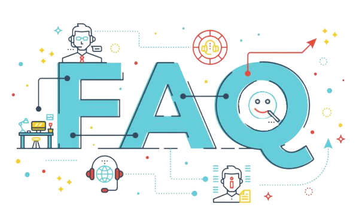

Clear lessons, hands‑on tools, and a supportive community to help you spot, understand, and respond to AI‑generated content.
AI is changing how the internet looks, sounds, and feels. We believe everyone should have the skills to recognize AI‑generated media and make confident decisions online. That’s why we turn complex concepts into clear guidance and practical exercises.
From students and creators to professionals and families—our goal is simple: make AI literacy accessible, actionable, and empowering.
Short, structured lessons that teach you how AI media works and the signals that reveal manipulation.
Practice with real examples and apply checklists that boost your accuracy and confidence.
Learn with others, share insights, and stay updated on the latest AI trends and risks.
We believe that knowledge is the most powerful tool against misinformation. Our approach prioritizes education over fear.
AI detection skills should be available to everyone, regardless of technical background or resources.
We promote responsible AI development and usage, advocating for transparency and accountability.
We're committed to making a positive impact worldwide, addressing the challenges of AI manipulation across cultures and communities.
We've educated over 50,000 individuals across 42 countries, providing them with essential AI detection skills.
Our platform has helped identify and debunk over 500 cases of AI-generated misinformation and deepfakes.
We've built a global community of AI literacy advocates, educators, and researchers working together.
Our work has been recognized by leading institutions and featured in major media outlets worldwide.
Help us build a more informed and resilient digital world. Whether you're a learner, educator, or supporter, there's a place for you in our community.

AI literacy refers to the ability to understand and critically evaluate AI-generated content, including deepfakes, AI-written text, and more.
AI literacy is crucial in today's digital age, as it helps individuals make informed decisions, avoid misinformation, and protect themselves from AI-generated threats.
You can learn AI literacy through our interactive lessons, hands-on detection exercises, and community support. Start your journey today!